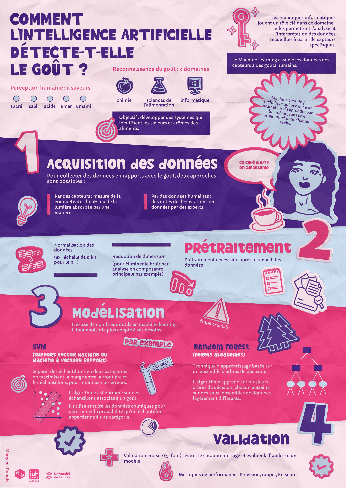
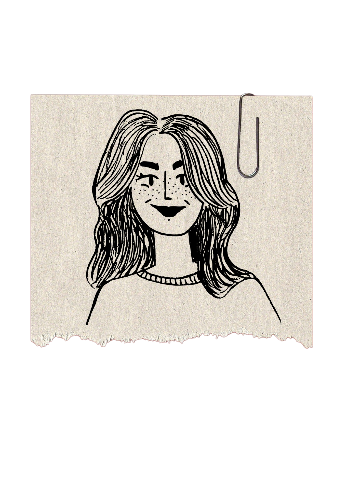
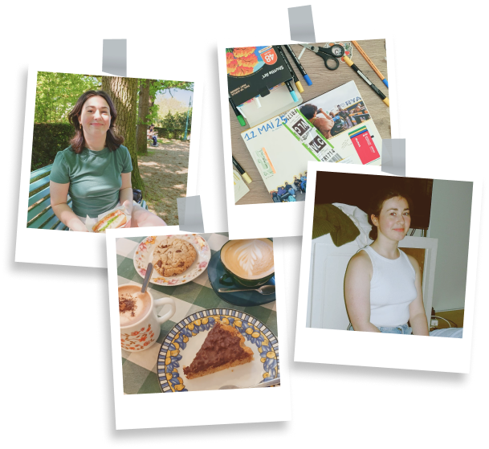
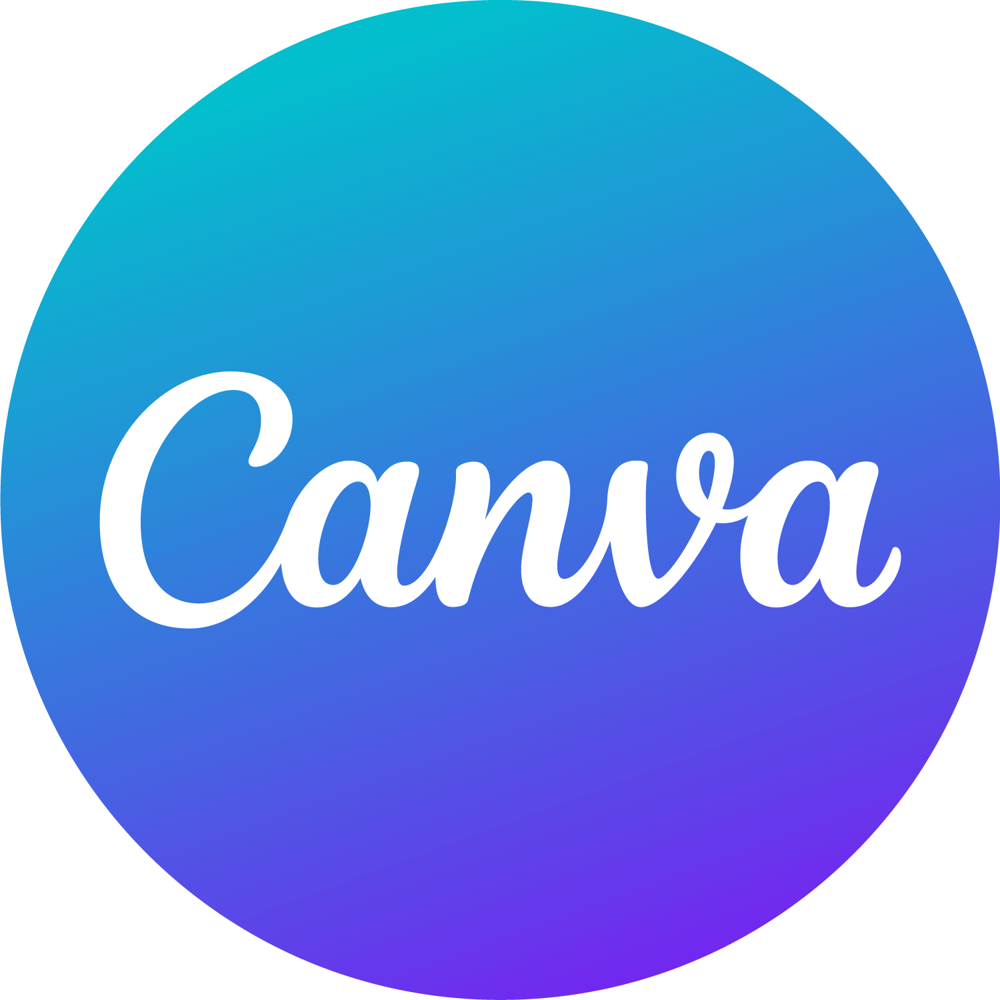
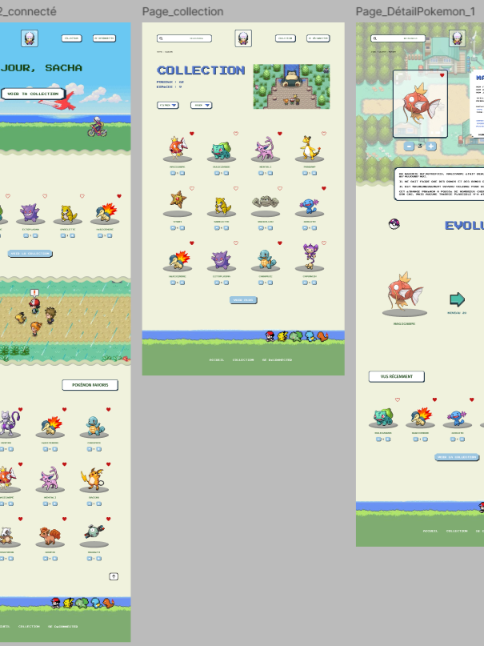
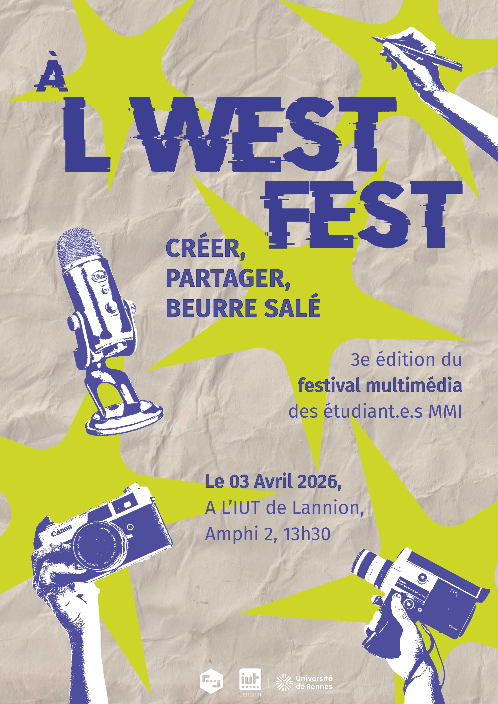
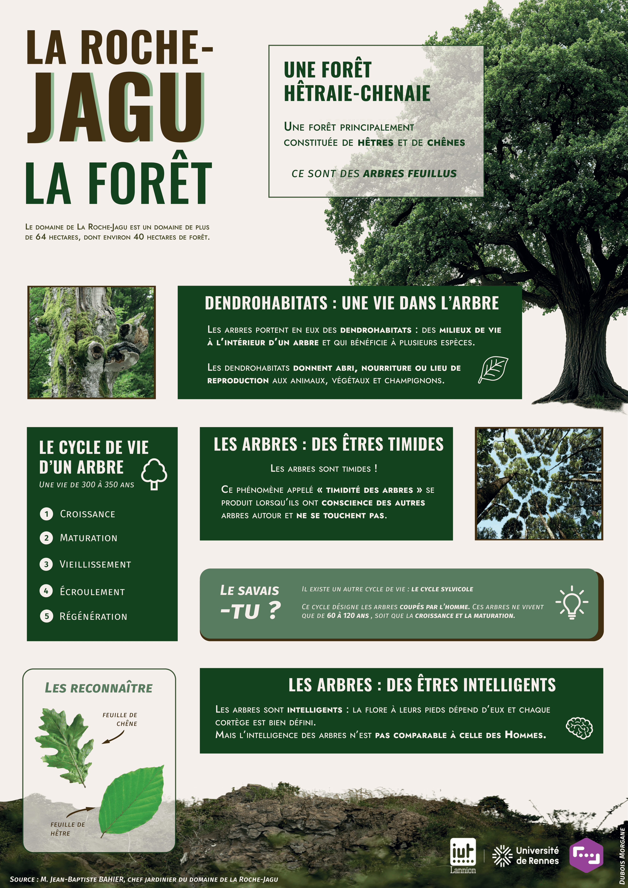
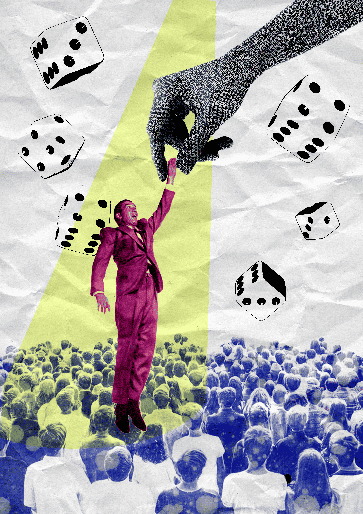
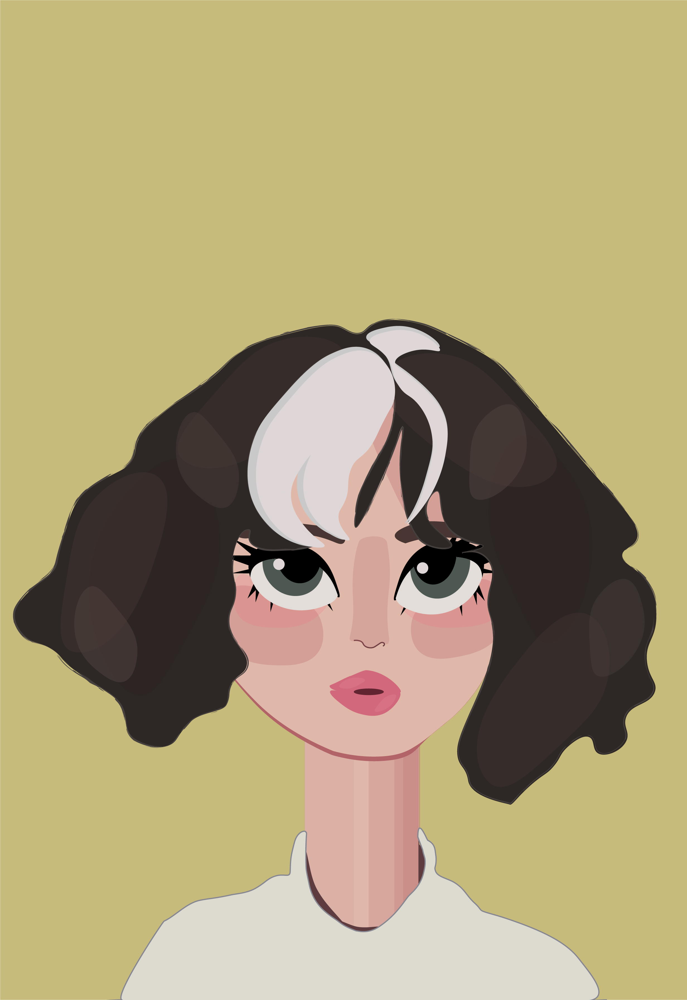

Mai 2026
Pour la Fête de la Science, j'ai réalisé une infographie scientifique sur la détection du goût par l'IA.


Moi c’est Morgane, une petite Normande adoptée par la Bretagne.
Amatrice de scrapbooking et testeuse de coffee shop, je suis tombée amoureuse de la ville de
Rennes dans laquelle j’ai réalisé une licence d’Arts Plastiques.
Entre pratique artistique et cours d'histoire de l’art, j’ai découvert le code et le webdesign :
enfin des domaines qui allient l’esthétique à l’utile.
Adieu les beaux cafés et bonjour la pluie, je débarque à Lannion !
Mon carnet de scrapbooking accueille un nouveau chapitre de ma vie : j’intègre le BUT Métiers
du
Multimédia et de l’Internet. Cette formation polyvalente nourrit mon envie d’en
apprendre plus sur le développement web, l’audiovisuel et le
graphisme.
Le prochain objectif : approfondir le design UX/UI, ce point où l’art devient vraiment
utile.
Ma prochaine étape : je vois bien une belle page sur une alternance dans le domaine du
webdesign !
On en parle autour d’un café ?
IUT de Lannion (22) - Université de Rennes
2025 - aujourd'hui
Communication, marketing, développement web, graphisme, audiovisuel,
gestion de projet, design UX/UI (découverte).
Participation au programme d’entrepreneuriat Fabrik ta Pépite.
Université Rennes 2 (35)
2022 - 2025
Pratique artistique, histoire de l’art, esthétique (philosophie de l’art), cours transversaux (webdesign et programmation HTML/CSS).
Lycée général et technologique Napoléon (61)
2022
Spécialités Arts Plastiques et LLCER Anglais (Langues, Littératures et Civilisations étrangères et régionales)

J’ai réalisé une maquette de site web pour une application web simulant la gestion d’une
collection Pokémon. Puis j’ai développé le site avec le langage HTML/CSS et le framework
Bulma.
Ce projet s’est déroulé sur un peu plus de deux mois, de début décembre 2025 à fin janvier
2026.
Ce projet est sûrement celui que j’ai préféré réaliser. Il allie le design (le visuel) et le
développement web (la technique), deux aspects que je trouve intéressants dans leur
complémentarité.
Il m’a aidé à comprendre mon intérêt pour le design UI, domaine complexe à
appréhender. J’ai apprécié voir le design que j’ai conçu prendre vie et être interactif.

J’ai réalisé une proposition d’affiche pour la 3e édition du festival MMI À l’West Fest de
l’IUT de Lannion, prévue en avril 2026.
Ce projet a duré près d’un mois, de mi-décembre 2025 à fin janvier 2026.
Il englobe toutes les phases de la création d'une production graphique afin qu'elle soit
esthétiquement solide et pertinente.
L'objectif était de mettre en pratique nos compétences acquises lors des travaux pratiques
sur Illustrator et Photoshop dans un cadre concret.
Grâce à ce projet, j’ai progressé graphiquement avec les outils Photoshop et Illustrator. Cela a développé mon esprit critique, notamment dans l’analyse des besoins clients. C’est une compétence très utile pour bien cibler la production sur un contenu adapté et pertinent. L’affiche était aussi l’occasion d'exercer ma créativité tout en faisant preuve d’autonomie.

Dans le cadre d'une sensibilisation à la transition environnementale, M. Jean-Baptise Bahier
est venu nous parler du Domaine de la Roche-Jagu et de ses espaces naturels.
Après son intervention, j'ai réalisé une infographie sur l'espace forestier du domaine,
mettant en avant
différentes informations à propos des arbres comme leurs cycles de vie ou bien les
différentes espèces présentes sur le domaine.
Ce projet a duré près d’un mois, de mi-décembre 2025 à fin janvier 2026.
Il englobe toutes les phases de la création d'une production graphique afin qu'elle soit
esthétiquement solide et pertinente.
Ce projet était une initiation au format d’infographie et cela m’a beaucoup plu.
J’ai apprécié créer un contenu visuel et textuel qui informe sur une notion concrète et
importante qu’est l’environnement. Je ne pensais pas qu’il était aussi difficile de
concilier image et texte afin d’avoir un rendu cohérent et homogène.
Ce projet était l’occasion de développer son écoute active, mais également de bien
comprendre les besoins clients.
J'ai eu l'opportunité d'interagir avec un professionnel autour d'une vraie demande,
de prendre en compte son expertise et ses retours.

Ce projet a été réalisé dans le cadre d’une prise en main du
logiciel Adobe Photoshop.
Ce travail illustre l'apprentissage des fondamentaux techniques de l'utilisation du
logiciel et a été réalisé en 4h.
L'objectif était de créer un montage homogène de photographies à partir d'un titre
d'article.
J’ai mobilisé mes compétences dans le logiciel Adobe Photoshop, notamment en donnant un
traitement graphique sur mes images comme de la texture ou de la coloration.
J’ai utilisé mon esprit d’analyse afin de comprendre l’article et ce qui s’en dégage. J’ai
analysé la manière dont je pouvais véhiculer le message visuellement et j’ai donc choisi
rigoureusement les bonnes images. La contrainte de temps (4h) m’a obligé à agir assez vite.
J'ai apprécié apprendre et travailler sur Photoshop, logiciel que je ne maîtrisais pas avant
ce projet.
Il est toutefois nécessaire que j’améliore encore mon utilisation de cet outil.

Mise en pratique du début de l'apprentissage du logiciel Adobe Illustrator avec un gros
projet.
J'ai effectué une illustration en pleine page en 4 heures, à partir d'une photo de la
chanteuse Pomme.
J'ai eu la liberté de choisir le style, la composition et les couleurs utilisées.
J’apprécie le domaine du graphisme alors j’avais hâte de pouvoir m’exercer sur Adobe
Illustrator avec un projet aussi agréable à réaliser.
Il a été assez difficile de trouver un style graphique et de commencer le projet, mais une
fois lancé,
tout s’est bien déroulé.
La contrainte de temps (4 h) a rendu l'exercice difficile et a
favorisé une
attention particulière aux éléments vraiment importants.
Cet exercice m'a fait comprendre à quel point l'illustration est un travail complexe mais
j'ai hâte
de pouvoir continuer à m'exercer et à progresser dans ce domaine qui me plaît beaucoup.
